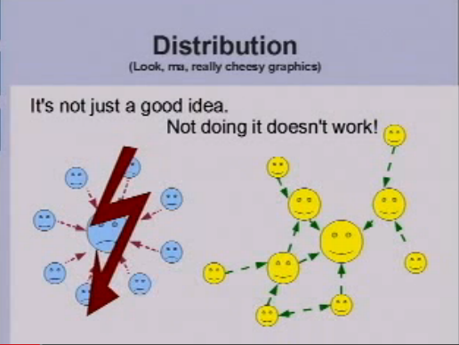
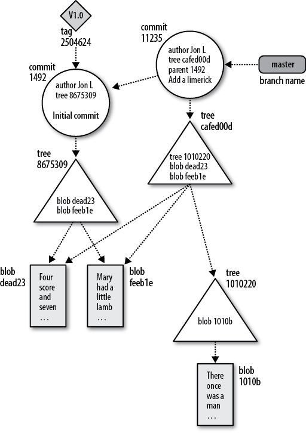
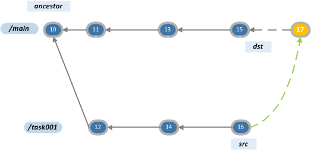
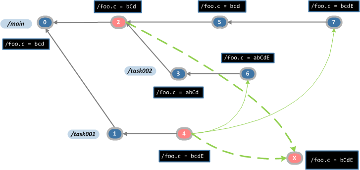
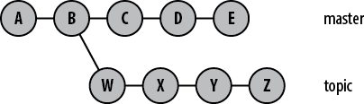
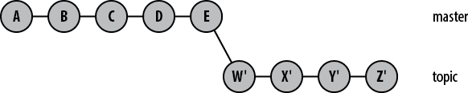
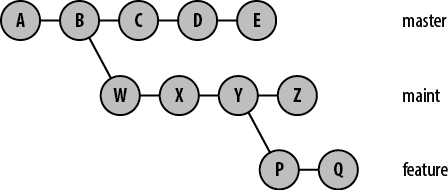
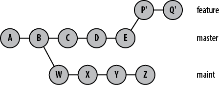
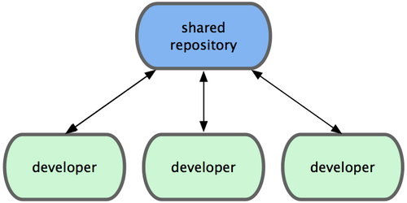
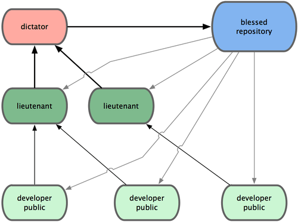

Git
- If you’re not distributed, you are not worth using;
- If you perform badly, you are not worth using;
- And if you cannot guarantee that the stuff I put into an SCM comes out exactly the same, you are not worth using;
“Quite frankly, that pretty much took care of everything out there.”
Git
- Distributed
- Performant
- Trustworthy
- Content management system
- Supports branching and merging with ease
- Relatively easy to build clean history
- Supports many different workflows
Distribution

Distribution
- Everyone has a copy of the entire repository
- No single place is more important than any other
- Every branch is a fork
- Everyone works freely in his own repository
Git Repository
- Objects
- Index
- Working directory
- Refs
Objects
- Blobs
- Trees
- Commits
- Tags
Every object is immutable
and identified by the SHA-1 hash of its content
Blob
- A regular file
- Only its content, no its filename or other metadata
- Every update on a file is a fully new blob (git doesn't record file-specific history).
Tree
- A level of directory information
- A collection of records that points to a (sub)tree, a blob or a submodule commit
- Stores the metadata — filename, file permissions
Tree
$ git cat-file -p ac3141ec562ac0b44a1745b62fc89b008a0d5c6b
100644 blob d08153a0905e4bde2d50407aabc2deab52d5d5f0 .gitignore
100644 blob 68ae013dab65d879d52b8c84645105d31884e505 .gitmodules
100644 blob c9356ad1684a7288107ae1fd35b6630e1c9dcfc4 .project
100644 blob 49107516279ea927db3301b9dd9a3d70172e1466 README.markdown
040000 tree 48cd144705043885a1674b793fc9e1eeab4de36f admin-client
040000 tree cf1c2bce90ecfd9077f4f886f95120c51a5ce5c7 common
040000 tree f1116f9eb3eeabe9e6f5030657ea2d9588cd301e content-ingest
040000 tree fc54c57f3b96642fdb00c36bccee5c40d0af69b1 domain
040000 tree 71f97a4e4791b3f99f7ed44505e73f4d8453fb9e map-reduce
100644 blob 72e6905a049d84a74db7997286a3718e02b29423 pom.xml
040000 tree b13f3944a6ab3d00d4df88f29282b80f532864f4 repository
100644 blob 9cf2466de05cb68325044205b9dec3ee20274eb0 rivinet-platform.iml
040000 tree 9e8843121eb0320ffe3161699675999c06cdd8e1 service
040000 tree 1c9410083792c706a36426ccc2c4163b03c3bf61 src
040000 tree 63a7c40fc610827f7ae2559e658a233a8111dac3 user-client
040000 tree 120de003c21b4137bbc42ccd7e82a6a8d5d60c66 web-server-clientTree
$ git cat-file -p 9e8843121eb0320ffe3161699675999c06cdd8e1
100644 blob 648fe13c95d9740406995ef1fdeddb527e5108ac .classpath
100644 blob 5e7bffab5fe0a9560df8203accb7b6c6f073e5c4 .project
040000 tree 6a396a8c1d70735302ee7729d599911e0951673d geoIp
100644 blob 09692ba6b44e51418d221deaf2cb53c55e0d197b pom.xml
040000 tree 1485d5592b1624b4be949393b3f246da7586c37f registration
100644 blob 5fcef5277756611954364a61d28435fb53019477 service.iml
040000 tree 66c64505c39adbcaa3e2185ed2500e986f0c4d2e srcCommit
Holds the metadata of a repository change
- Author and authored date
- Commiter and commited date
- Directory structure — a tree object
- Parent commit(s)
Commit
$ git cat-file -p b02f0f8
tree 4b99eeaaad4c6af91b46d869f96d735d561daf9a
parent 09a7f919ed912534544489cff608cc18920aece5
author Yavor Yankov <iiankov@obecto.com> 1382435241 +0300
committer Yavor Yankov <iiankov@obecto.com> 1382435241 +0300Commit
$ git cat-file -p develop
tree 2c862e3d773a711e18852d1e59cefe5c16fb0d08
parent b02f0f83655ab16466b2e1f61609d0535362f737
parent eed89a6588c04528b307fa8d704066a725297230
author Zdravko Stoychev <zstoychev@obecto.com> 1382452829 +0300
committer Zdravko Stoychev <zstoychev@obecto.com> 1382452829 +0300
Merge branch 'hotfix/0.2.5.1' into developTag
- A reference to a specific object, usually a commit
- Annotated and lighweight
Tag
$ git cat-file -p 0.2.5
object 427070a7f5b7ac09e4f27644715dcbc09d37c359
type commit
tag 0.2.5
tagger Zdravko Stoychev <zstoychev@obecto.com> Mon Oct 14 11:49:15 2013 +0300
Completing the release/0.2.5 branchIndex
$ git ls-files -s
100644 1620d5c9c4d3102beb552bc2db496482924386ea 0 .gitignore
100644 729c14459ef878396ea31aa39c66288718a55f89 0 .gitlab-ci.yml
100644 8bd049ee3fb4630f73534e21eb2c9cb715958bed 0 Dockerfile
100644 1020099864cdeb08e609bea9867454ff2e9aec87 0 build.sbt
100644 45a71bdbe258baccae6592ec526cda40491b0abd 0 project/build.properties
100644 cc9a881cbc5c19f3874f9690e9026241d3719843 0 project/plugins.sbt
100644 d3f48561aaf8058a2bf43ec7eeaa6160091bc3f4 0 src/main/resources/application.conf
100644 7e4b43d21b7f567036fbbffd22342ef82cc0ce29 0 src/main/resources/logback.xml
100644 5130484f89f5592193350336705224bf77ff2a10 0 src/main/scala/com/ocado/vedatacollector/Healthcheck.scala
100644 d81d31ce802fce025980087887bea83c2a0e2af8 0 src/main/scala/com/ocado/vedatacollector/Main.scala
100644 351fdde65b4c29ff46353c82678efaec3b78388d 0 src/main/scala/com/ocado/vedatacollector/MessageTransformer.scala
100644 5734e60865e03b11406de0277a46f0a5933f2628 0 src/main/scala/com/ocado/vedatacollector/transformation/MultiplicationTransformation.scala
100644 f473cb3092785bb10066e74cd9d2dc161311430d 0 src/main/scala/com/ocado/vedatacollector/transformation/ReportingMessageMultiplications.scala
100644 100fe83a3731201df31fc50a4e9d47fd93e5d1cb 0 src/main/scala/com/ocado/vedatacollector/transformation/Transformation.scala
100644 127b71ea2b2bf1eaaaf1e6568e4a66c88f32f206 0 src/main/scala/com/ocado/vedatacollector/utils/JsonUtils.scala
100644 e7f7bd8c128a9ed3c5eeea46a3425d34e3737a24 0 src/test/scala/com/ocado/vedatacollector/MessageTransformerTest.scala
100644 0a226fb721045e7fe2b8db8f08376d4df1ff4360 0 src/test/scala/com/ocado/vedatacollector/test/UnitTest.scala
100644 0b9cdeaaae8506e31bb1dad9cbee6603a283cf51 0 src/test/scala/com/ocado/vedatacollector/transformation/MultiplicationTransformationTest.scala
100644 5a75350a9756a8d41ea36781da9ff5939c58da52 0 src/test/scala/com/ocado/vedatacollector/transformation/TransformationTest.scala
100644 bd20c9e3fda4542a1b9cb4a6da14c570e9c77abf 0 src/test/scala/com/ocado/vedatacollector/utils/JsonUtilsTest.scala
Objects Demo
Refs
- Branches
- Tags (lightweight and annotated)



Everything else is a tooling built upon this foundation.
Showing/Analysing
Repository Content
- git show
- git cat-file
- git diff
- git log
- git blame
Git doesn't track renames. It infers them (with a probability).
git blame
- git blame file
- git blame -w — ignore whitespace
- git blame -M — detects moved lines within a files
git blame
prod.c
#include <math.h>
double sum(const double* in, int n) {
int i;
double acc = 0;
for(i = 0; i < n; ++i) {
acc += in[i];
}
return acc;
}sum.c
#include <math.h>
double prod(const double* in, int n) {
int i;
double acc = 1;
for(i = 0; i < n; ++i) {
acc *= in[i];
}
return acc;
}git blame
common.c (in newer commit)
#include <math.h>
double prod(const double* in, int n) {
int i;
double acc = 1;
for(i = 0; i < n; ++i) {
acc *= in[i];
}
return acc;
}
double sum(const double* in, int n) {
int i;
double acc = 0;
for(i = 0; i < n; ++i) {
acc += in[i];
}
return acc;
}git blame
git blame -C common.c
^ae7f28a prod.c 1) #include <math.h>
^ae7f28a prod.c 2)
^ae7f28a prod.c 3) double prod(const double* in, int n) {
^ae7f28a prod.c 4) int i;
^ae7f28a prod.c 5) double acc = 1;
^ae7f28a prod.c 6)
^ae7f28a prod.c 7) for(i = 0; i < n; ++i) {
^ae7f28a prod.c 8) acc *= in[i];
^ae7f28a prod.c 9) }
^ae7f28a prod.c 10)
^ae7f28a prod.c 11) return acc;
^ae7f28a prod.c 12) }
^ae7f28a sum.c 13)
^ae7f28a sum.c 14) double sum(const double* in, int n) {
^ae7f28a sum.c 15) int i;
^ae7f28a sum.c 16) double acc = 0;
^ae7f28a sum.c 17)
^ae7f28a sum.c 18) for(i = 0; i < n; ++i) {
^ae7f28a sum.c 19) acc += in[i];
^ae7f28a sum.c 20) }
^ae7f28a sum.c 21)
^ae7f28a sum.c 22) return acc;
^ae7f28a sum.c 23) }Referencing objects
- Object’s hash —
eed89a6588c0452 - Tags
Referencing commits
- Commit’s hash —
eed89a6588c0452 - Named refs — branches, tags
- Special names
- HEAD — the checkouted commit (or the most recent commit on the current branch)
- ORIG_HEAD — the state of HEAD before certain operations like merge, reset, etc.
- FETCH_HEAD — the head of the last fetched branch (after git fetch)
- MERGE_HEAD — the tip of the other branch, when a merge is in progress
Referencing commits
- @{u} – the upstream branch of HEAD
- develop@{u}
- develop@{yesterday}
- develop@{last Monday}
- develop@{3 hours ago}
Referencing commits
- Relative names
- HEAD~2
- HEAD^
- master~3^2~

Commit ranges
start..end— the set of commits reachable from end that are not reachable from start.- e.g.
master..origin/master– the commits from origin/master that are not yet merged into master master...develop— the symmetric difference between the commitsgit log X– all commits reachable from Xgit log ^X– ignore commits reachable from Xgit log ^develop ^topic master
Referencing files
- git show/diff <commit>:<file>
- git log <commit> -- <file>
- git checkout <commit> -- <file>
Managing
- the index
- the working directory
- the current branch
Managing the index
-
git add <filepattern>...
- git add -p – adding patches
- git rm <filepattern>...
- git mv <source> <destination>
- <filepattern> — '*.java', 'a/bc/d/*.xml'
Managing the index
File classification
- Tracked
- Ignored
- Untracked
Managing the working directory
- git checkout [ref] <paths>... — from the index/the ref
- git checkout [ref] — update the index, the working directory and HEAD to match that ref
- git clean -f -d
Managing the current branch
- git commit
(new commit from the index, --author, etc) - git commit --amend
(copy of the last commit with the current index) - git reset
- git merge
- git rebase
- git cherry-pick
- git revert
git commit
What happens?
Commit messages
Commit messages
Summarize changes in around 50 characters or less
More detailed explanatory text, if necessary. Wrap it to about 72
characters or so. In some contexts, the first line is treated as the
subject of the commit and the rest of the text as the body. The
blank line separating the summary from the body is critical (unless
you omit the body entirely); various tools like `log`, `shortlog`
and `rebase` can get confused if you run the two together.
Explain the problem that this commit is solving. Focus on why you
are making this change as opposed to how (the code explains that).
Are there side effects or other unintuitive consequences of this
change? Here's the place to explain them.
Further paragraphs come after blank lines.
- Bullet points are okay, too
- Typically a hyphen or asterisk is used for the bullet, preceded
by a single space, with blank lines in between, but conventions
vary here
If you use an issue tracker, put references to them at the bottom,
like this:
Resolves: #123
See also: #456, #789Commit messages
- Separate subject from body with a blank line
- Limit the subject line to 50 characters
- Capitalize the subject line
- Do not end the subject line with a period
-
Use the imperative mood in the subject line
- If applied, this commit will <subject-line>
- Wrap the body at 72 characters
- Use the body to explain what and why vs. how
Git already provides such style of messages for its operations — merge, revert, etc
Changing last commit
git commit --amend
Changing to a known state
- git reset --soft [commit]
- points the current branch to that commit
- git reset --mixed [commit] (the default)
- points the current branch to that commit
- changes the index to the tree in that commit
- git reset --hard [commit]
- points the current branch to that commit
- changes the index to the tree in that commit
- changes the state of the working directory to match that commit (untracked and ignored files are untouched)
Merge
$ git checkout branch
$ git merge other-branchMerge branch 'release/0.2.4' into develop
# Conflicts:
# service/src/main/java/com/rivinet/service/domain/member/impl/MemberProfileInfoServiceImpl.javaMerge conflicts
- For each conflicted file the index contains the merge base version, “our” version and “their” version
- git log --merge --left-right -p
- git checkout --ours
- git checkout --theirs
- git merge --abort
Degenerate merge strategies
- Already up-to-date
- Fast-forward (disallow with --no-ff)
Two way merge
– not used by Git

Resolve merge strategy
Three way merge between the merge base and the two branches

Resolve merge strategy

Recursive merge strategy
The default. Minimizes conflicts
Recursive merge strategy

Recursive merge strategy

Other merge strategies
- Octopus
- Ours
- Subtree
- Squash
Merge tool
- merge.tool config
- git mergetool [file...]
- mergetool.keepBackup
Picking individual commits
- git cherry-pick <commit> — apply that commit to the current HEAD (and update the branch)
- git cherry-pick start^..end — apply the commits in the range start^..end to the current HEAD (and update the branch)
Reverting commits
- git revert <commit> - creates a new commit that undoes the changes in the specified commit
- git revert start^..end — for each commit in the range create a new commit that undoes it
Revert "Show the end screen when the video is paused"
This reverts commit f3db63c38b879deda3c8656df847fbb26a31c0ea.Reverting merge commits
---o---o---o---M---x---x
/
---A---Bgit revert -m 1 M
---o---o---o---M---x---x---W
/
---A---B$ git merge feature
Already up-to-date.Reverting merge commits
Fix the branch
---o---o---o---M---x---x---W---x
/
---A---B-------------------C---D$ git revert W
Finished one revert.
[master 268e243] Revert "Revert "Merge branch 'feature'""
1 files changed, 2 insertions(+), 0 deletions(-)
$ git merge feature
Auto-merging test.txt
Merge made by recursive.
test.txt | 1 +
1 files changed, 1 insertions(+), 0 deletions(-) ---o---o---o---M---x---x---W---x---M'--*
/ /
---A---B-------------------C---DReverting merge commits
Fix on a new branch
$ git checkout feature-prime
$ git revert W
...
$ git merge feature-prime ---o---o---o---M---x---x---W---x---x---x---*
/ \ /
---A---B M'--C---DReverting merge commits
Rebase the branch
---o---o---o---M---x---x---W---x---x---x---x---*
/ \ /
---A---B A'--B'--C---DReverting merge commits
If a fix is quick enough you can also just fix the problem instead of reverting the whole merge
Rebasing commits

$ git checkout topic
$ git rebase master
Rebasing commits

$ git rebase --onto master maint^ feature
Rebasing commits
- The rebase operation creates new commits
- To rebase you should have clean working directory
- Each commit is merged one by one and when a conflict occures the rebase operation is paused
- git rebase --continue, git rebase --abort, git rebase --skip
- git rebase --preserve-merges
Rebasing commits – cleaning up history
git rebase -i (demo)
Linus wisdom
I want clean history, but that really means (a) clean and (b) history.
Linus wisdom
People can (and probably should) rebase their _private_ trees (their own work). That's a _cleanup_. But never other peoples code. That's a "destroy history"
Linus wisdom
You must never EVER destroy other peoples history. You must not rebase commits other people did. Basically, if it doesn't have your sign-off on it, it's off limits: you can't rebase it, because it's not yours.
Linus wisdom
Keep your own history readable
Some people do this by just working things out in their head first, and not making mistakes. but that's very rare, and for the rest of us, we use "git rebase" etc while we work on our problems.
Linus wisdom
Don't expose your crap.
This means: if you're still in the "git rebase" phase, you don't push it out. If it's not ready, you send patches around, or use private git trees (just as a "patch series replacement") that you don't tell the public at large about.
Linus wisdom
Don't merge upstream code at random points.
You should _never_ pull my tree at random points (this was my biggest issue with early git users - many developers would just pull my current random tree-of-the-day into their development trees). It makes your tree just a random mess of random development. Don't do it!
But if you want to sync up with major releases, do a git pull linus-repo v2.6.29
Aliases
git config --global alias.ss "status -s"git config --global alias.grog 'log --graph --abbrev-commit --decorate --all --format=format:"%C(bold blue)%h%C(reset) - %C(bold cyan)%aD%C(dim white) - %an%C(reset) %C(bold green)(%ar)%C(reset)%C(bold yellow)%d%C(reset)%n %C(white)%s%C(reset)"'git reflog
git bisect
git stash
- --keep-index
- --include-untracked (-u)
- --all
git describe
git worktree
Remote Repositories
- git remote add <remote> <uri> – can add multiple remotes
- git remote show <remote>
- For each
branchof <remote> a ref namedremote/branchis created in the local repo - These are called remote-tracking branches and are created and updated on fetch
Remote Repositories
- git clone <uri>
- Creates an origin that points to the remote repo
- Fetches the branches and the objects from the remote
- Checkouts the master branch and sets it to track origin/master
- --bare — the local repository doesn’t have working directory, index and HEAD. Appropriate for non-developer repositories
Tracking branches
- Local branches with a relation to an upstream branch
- Created automatically with git checkout <remote-branch-name>
- git push -u origin <branch-name>
Pushing
- git push <remote> [<local-branch>:]<remote-branch>
- git push – when on tracking branch
- Works only if the remote branch can be fast-forwarded
- push --force[-with-lease]
Working with remotes
- git pull — git fetch + get merge FETCH_HEAD
- git pull --rebase — git fetch + git rebase FETCH_HEAD
- git pull --rebase=preserve — git fetch + git rebase --preserve-merges FETCH_HEAD
- set pull.rebase config to preserve
git submodule
- git submodule add <remote>
- git submodule init
- git submodule update
- git clone --recurse-submodules <remote>
- git diff --submodule
- git submodule update --remote
Workflows
Repositories organization
- Centralized workflow
- Integration-Manager workflow
- “Decentralized but centralized” workflow (the one Gitflow uses)
- Linux workflow (a.k.a. Dictator and Lieutenants Workflow)
Centralized workflow

Integration-Manager workflow

“Decentralized but centralized”

Linux workflow

Workflows
Branches organization
- Gitflow
- git.git workflow
- GitHub Flow
git.git workflow
- Feature graduation
- maint — tracks the commits that should go into the next “maintenance release”, i.e., update of the last released stable version;
- master — tracks the commits that should go into the next release;
- next — intended as a testing branch for topics being tested for stability for master.
- pu (proposed updates) — an integration branch for things that are not quite ready for inclusion yet.
- Topic branches
- https://www.kernel.org/pub/software/scm/git/docs/gitworkflows.html
GitHub Flow
- Anything in the master branch is deployable
- Create new topic branches off of master
- Open a pull request at any time
- Merge only after pull request review
- Deploy immediately after review
- Good for teams who are constantly testing and deploying and who ship every day
- http://scottchacon.com/2011/08/31/github-flow.html
Gitflow
Main branches
- master — production ready state
- develop — latest delivered development changes for the next release
Gitflow
Supporting branches
- Feature branches
- Release branches
- Hotfix branches
Gitflow — feature branches (a.k.a. topic branches)
- Used to develop a feature
- Typically exists in developer repos only, not in origin.
- May branch off from develop
- Must merge back into develop
- Naming convention: feature/*
Gitflow — creating feature branches
$ git checkout -b feature/myfeature develop
Switched to a new branch "feature/myfeature"Gitflow — finishing feature branches
$ git checkout develop
Switched to branch 'develop'
$ git merge --no-ff feature/myfeature
Updating ea1b82a..05e9557
(Summary of changes)
$ git branch -d feature/myfeature
Deleted branch myfeature (was 05e9557).Gitflow — creating feature branches

Gitflow — release branches
- Supports preparation for new release
- Good for final touches, minor bugfixes, prepering the metadata for the release
- Allows the develop branch to be freed to accept changes for the next release
- May branch off from develop
- Must merge back into develop and master
- Naming convention: release/*
Gitflow — creating release branches
$ git checkout -b release/1.2 develop
Switched to a new branch "release/1.2"
$ ./bump-version.sh 1.2
Files modified successfully, version bumped to 1.2.
$ git commit -a -m "Bumped version number to 1.2"
[release-1.2 74d9424] Bumped version number to 1.2
1 files changed, 1 insertions(+), 1 deletions(-)Gitflow — finishing release branches
$ git checkout master
Switched to branch 'master'
$ git merge --no-ff release/1.2
Merge made by recursive.
(Summary of changes)
$ git tag -a 1.2
$ git checkout develop
Switched to branch 'develop'
$ git merge --no-ff release/1.2
Merge made by recursive.
(Summary of changes)
$ git branch -d release/1.2
Deleted branch release/1.2 (was ff452fe).Gitflow — hotfix branches
- Used to fix an undesired state in the master branch, usually a bug
- May branch off from master
- Must merge back into develop and master
- Naming convention: hotfix/*
Gitflow — creating hotfix branches
$ git checkout -b hotfix-1.2.1 master
Switched to a new branch "hotfix/1.2.1"
$ ./bump-version.sh 1.2.1
Files modified successfully, version bumped to 1.2.1.
$ git commit -a -m "Bumped version number to 1.2.1"
[hotfix-1.2.1 41e61bb] Bumped version number to 1.2.1
1 files changed, 1 insertions(+), 1 deletions(-Gitflow — finishing hotfix branches
$ git checkout master
Switched to branch 'master'
$ git merge --no-ff hotfix/1.2.1
Merge made by recursive.
(Summary of changes)
$ git tag -a 1.2.1
$ git checkout develop
Switched to branch 'develop'
$ git merge --no-ff hotfix/1.2.1
Merge made by recursive.
(Summary of changes)
$ git branch -d hotfix/1.2.1
Deleted branch hotfix/1.2.1 (was abbe5d6).Gitflow — creating hotfix branches